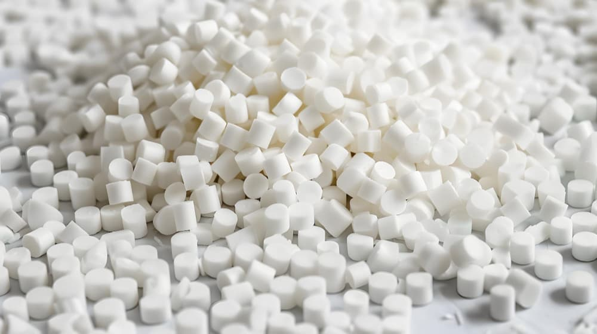
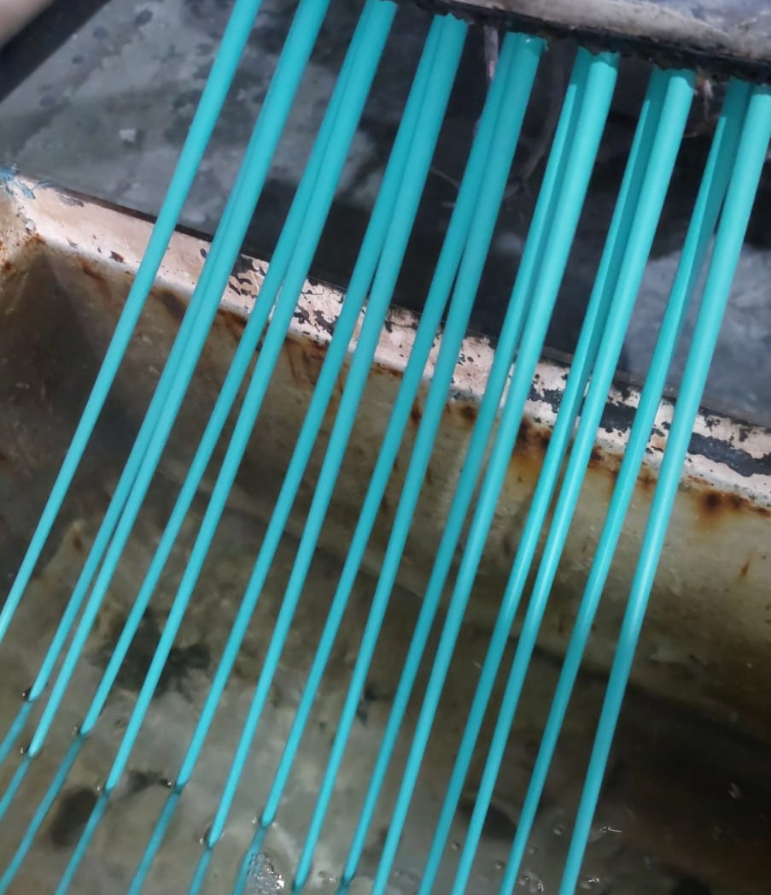

Quem é a Recinject
A Recinject Reciclados é uma empresa localizada em São José dos Pinhais – PR, especializada na reciclagem de matéria-prima plástica. Atuamos na transformação de resíduos plásticos pós-indústria em granulados de alta qualidade, destinados à indústria de injeção plástica.

Nossos Diferenciais

Qualidade na matéria-prima reciclada
Granulados reciclados de alta performance

Processo de alta depuração
Tecnologia avançada de purificação e controle
Compromisso com sustentabilidade
Atuação responsável e foco na preservação ambiental
Atendimento
Direto e transparente